Handmade tea companions & art dolls
Collectible characters with tangible stories. Handcrafted with zero molds or copies.
No two are alike. Somewhere here is the one whose spirit mirrors yours.
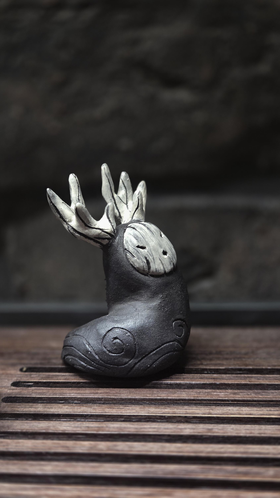
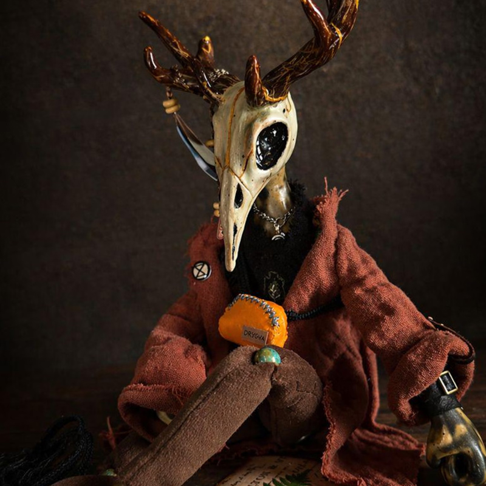
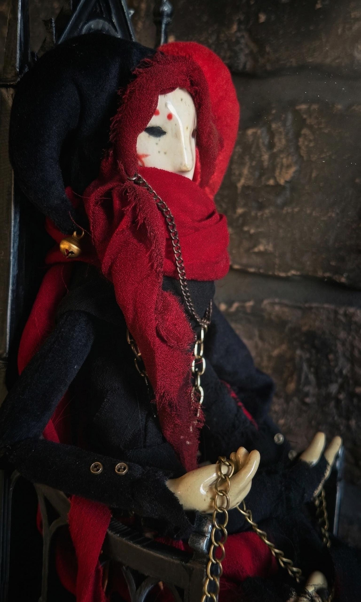
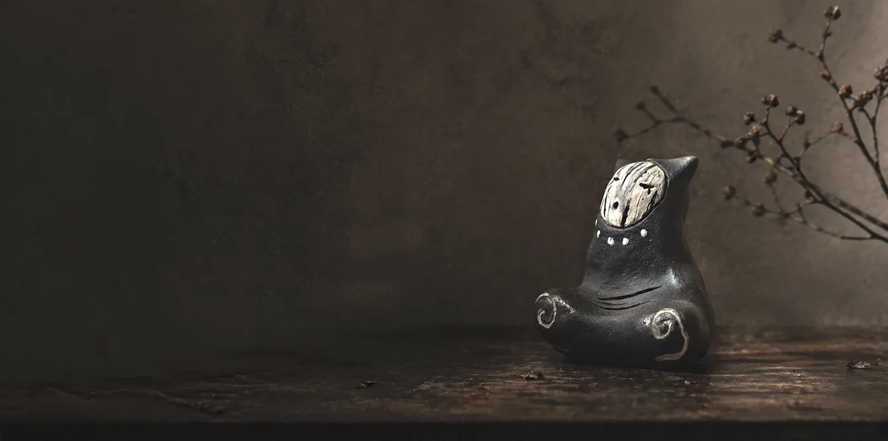
Pour tea over your tiny ceramic friend to warm its soul. Find the Tea Pet that speaks to you or gather a set for any vibe.
Meet them ↓Pour tea over them and the clay matures over time.
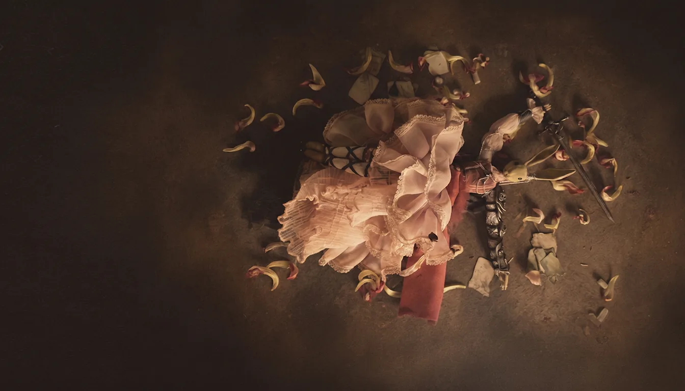
Posable mixed-media guys with unique stories, each one truly one of a kind. Loyal partners in crime to share your world and daily routine. Three worlds: fallen fantasy, city misfits, and pocket-sized spores.
Enter the worlds ↓No molds, no copies. Three distinct series, each with its own world.
Creatures born from dark, decadent fantasy, inhabitants of forgotten realms.
Contemporary buddies shaped by modern cities. Slightly broken, slightly surreal.
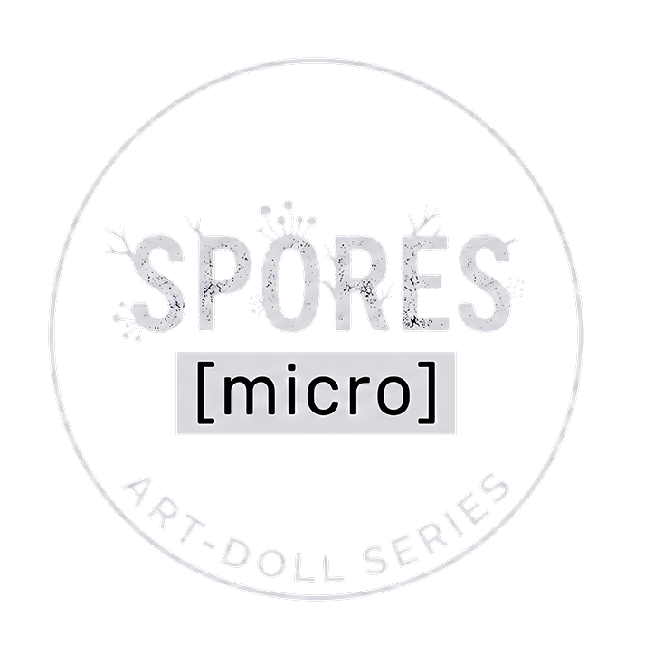
Small, portable beings: minimal in form, maximal in personality. Pocket-sized.
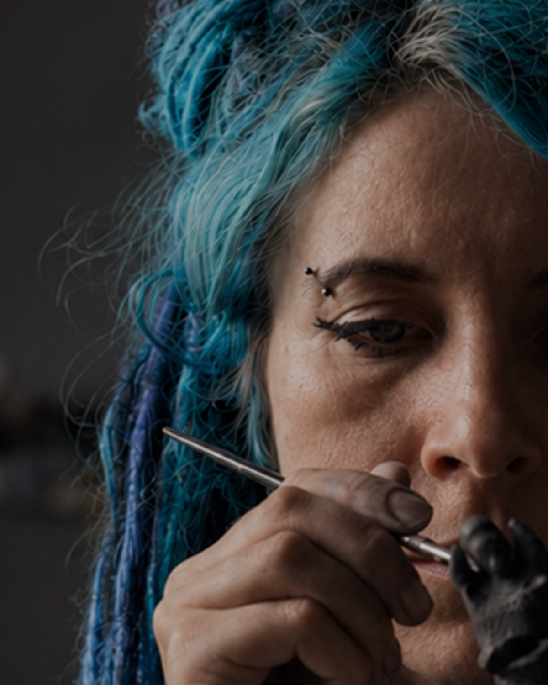
Let's be honest, everyone needs a friend. Someone who shares your energy and stands by you on your own wavelength. I cannot find people for you, but I create strange, magical companions with very different characters. Every single one of them is looking for its human.
I sculpt these entities by hand using clay and mixed media. There are no molds and no copies here. My characters can be arrogant, cute, odd, or whimsical, but they are always real. They do not care about being normal.
If you appreciate beauty with a sharp edge and want a companion with a real soul, step inside.
Before they find their humans, these creatures are just raw clay, piles of linen, and a cup of freshly brewed tea on my desk. Here is where the clay wakes up, and where the studio's daily chaos lives.
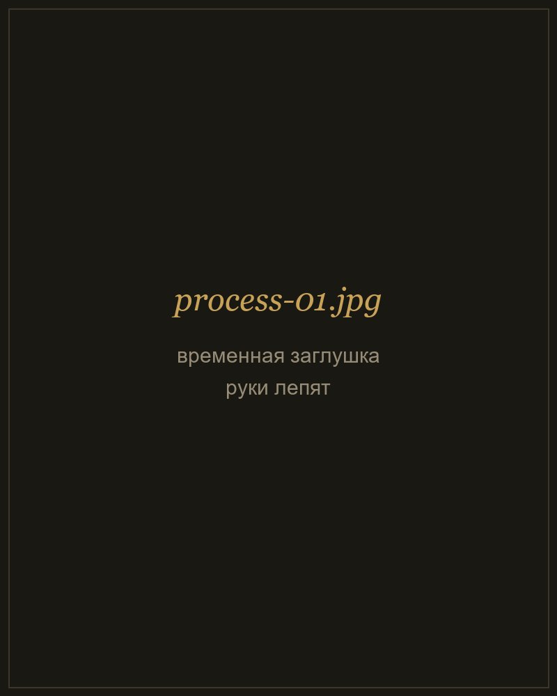
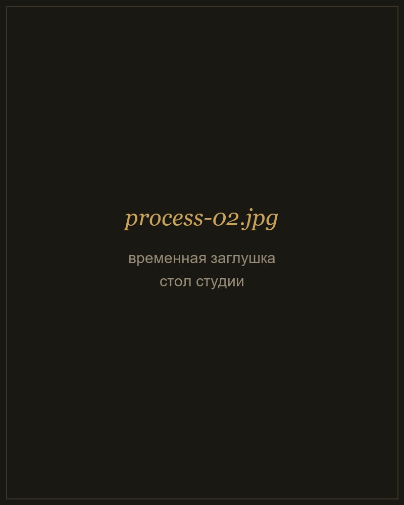
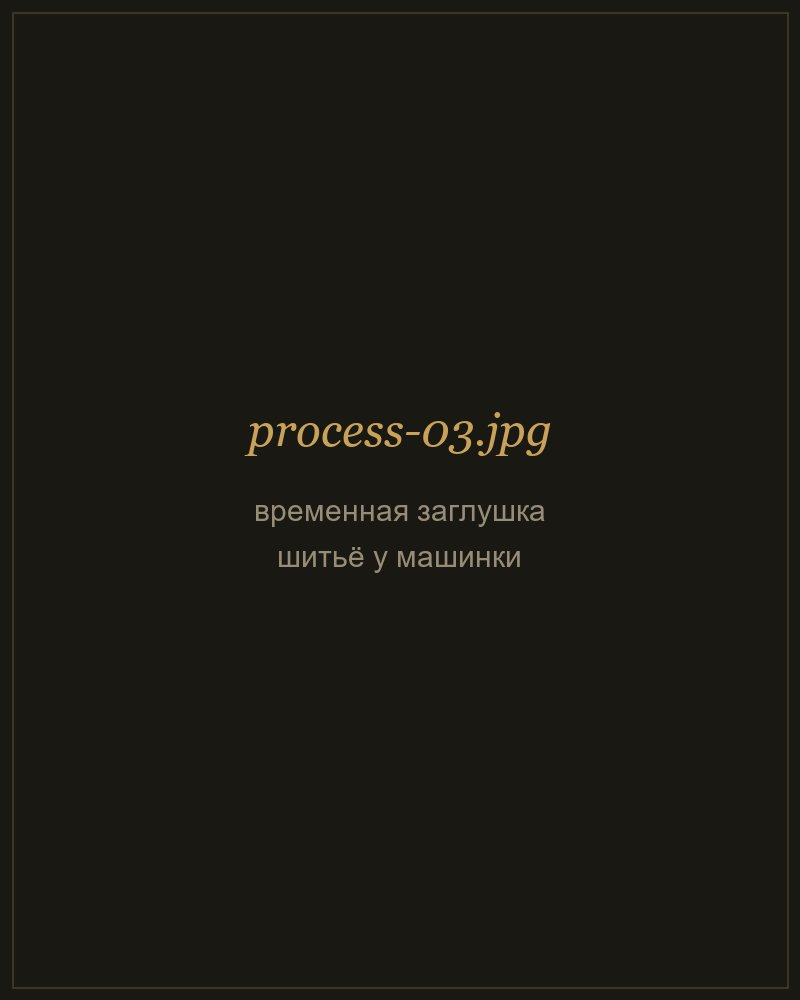
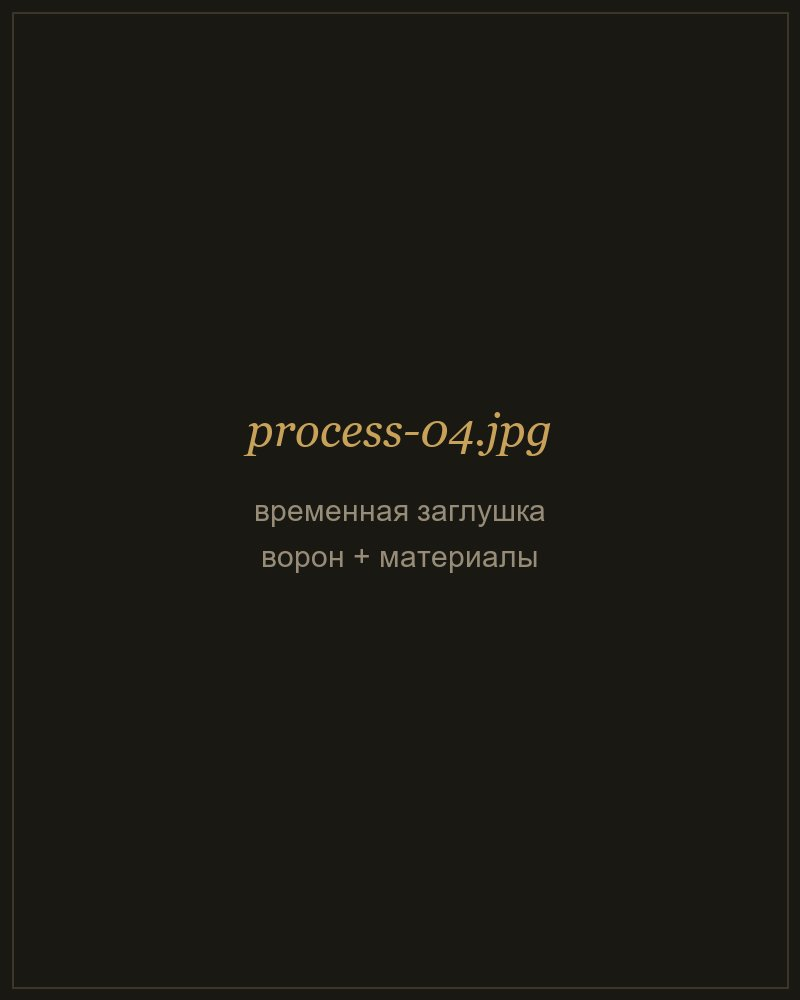
Words from those who have welcomed a strange companion into their home.
Absolutely gorgeous piece very well crafted and packed, amazing communication. Extra tea coin and little dragon extra are a very cute addition, thank you!
This is one of the most beautiful things I have ever gotten on Etsy and the packaging was also beautiful. Highly, highly recommend!
My tea pet was shipped super fast, it's my first and I couldn't have picked a better tea pet, Kovu is amazing! The packaging was super nice too!
No two are alike. You'll find silly ones, thinkers, absolute sleepyheads, and the bold and fierce. Somewhere among them is the one that shares your vibe.
This is only the beginning of the saga. The rest have gathered in my Etsy shop, waiting to meet their humans. Step inside to see who calls to you, and peek behind the scenes of my workshop on Instagram.
Rare letters, only when new creatures appear. No spam.